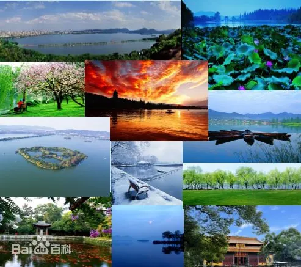

西湖十景，位于中国浙江省杭州市西湖区境内，为西湖风景名胜区周围的十处建于南宋至清的特色景区，包括苏堤春晓、曲院风荷、平湖秋月、断桥残雪、花港观鱼、柳浪闻莺、三潭印月、双峰插云、雷峰夕照、南屏晚钟。
西湖十景景点基本围绕西湖分布，有的就位于西湖上，十景各擅其胜，组合在一起则能代表古代西湖胜景精华。 西湖十景系列景观涉及了春夏秋冬、晨晌昏夜、晴雾风雪、花鸟虫鱼等关于季节、时节、气象、动植物的景观特色，以及堤、岛、桥、亭、台、楼、阁、园林、宅院、寺塔等较为丰富的景观元素，并各有侧重地表现出或生动、或静谧、或隐逸、闲逸、冷寂、禅境等审美意境。
西湖十景是在南宋这一中国传统文化艺术的成熟期和鼎盛期创造的较重要的景观作品，反映了中国古代文化艺术中诗、画、景在审美和哲学层面上的有机结合、达到统一的重大特质， 体现了人与自然的融合。
2011年6月24日，包含西湖十景在内的“杭州西湖文化景观”被列入《世界遗产名录》，成为中国第41处世界遗产。 2013年5月3日，西湖十景被中华人民共和国国务院公布为第七批全国重点文物保护单位。
